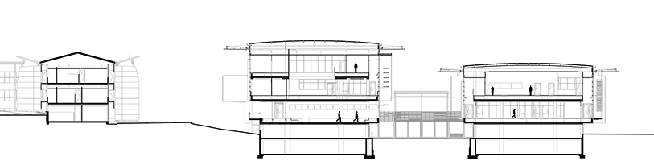
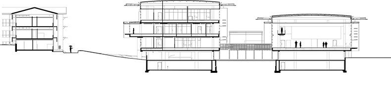
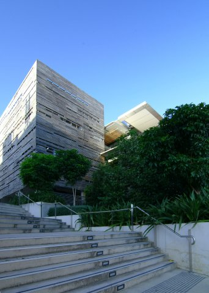
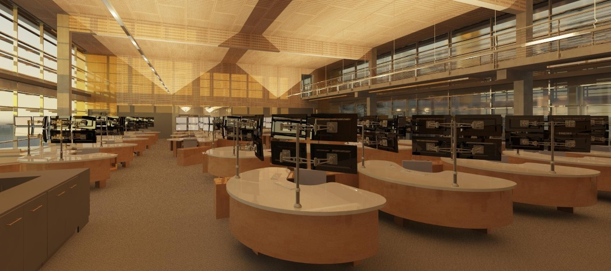
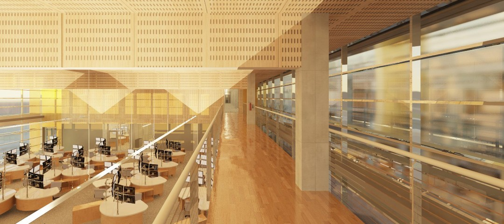

The Queensland Emergency Operations Centre (QEOC) is the State level operations hub for Queensland and incorporates both a triple zero emergency call centre (CC) as well as regional disaster management centre (DMC). The CC is staffed 24 hours a day, seven days a week, while the DMC is unoccupied until required during a natural disaster.
Located in a northern suburb of Brisbane, QEOC occupies a tract of land that has good access by car, public transit and bicycle. The buildings accommodate offices, meeting rooms, and large volume call centres. Redundancy is critical, the facility therefore employs a series of back-up systems to allow off grid operation during emergencies, including on-site co-generators, and if required diesel generators.
The main work spaces within the buildings are within double height volumes, with support spaces adjacent, and amenities located on the western edge of a circulatory spine. The overarching idea was to create two linked 'houses' that are connected together and back to the existing facility by a series of outdoor rooms that take the form of gardens and courtyards. A campus feel is created as a result of these outdoor rooms.




